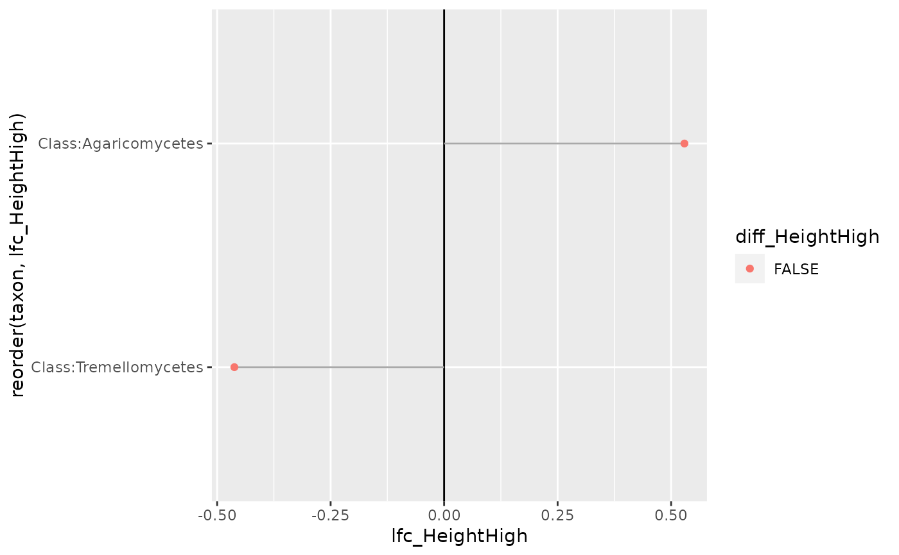

![[Experimental]](figures/lifecycle-experimental.svg)
A wrapper for the ANCOMBC::ancombc2() function
Arguments
- physeq
(required): a
phyloseq-classobject obtained using thephyloseqpackage.- fact
(required) Name of the factor in
physeq@sam_dataused to plot different lines- levels_fact
(default NULL) The order of the level in the factor. Used for reorder levels and select levels (filter out levels not present en levels_fact)
- tax_level
The taxonomic level passed on to
ANCOMBC::ancombc2()- ...
Other arguments passed on to
ANCOMBC::ancombc2()function.
Value
The result of ANCOMBC::ancombc2() function
Details
This function is mainly a wrapper of the work of others.
Please make a reference to ANCOMBC::ancombc2() if you
use this function.
Examples
res_height <- ancombc_pq(
data_fungi_mini,
fact = "Height",
levels_fact = c("Low", "High"),
verbose = TRUE
)
#> Warning: The group variable has < 3 categories
#> The multi-group comparisons (global/pairwise/dunnet/trend) will be deactivated
#> Warning: The number of taxa used for estimating sample-specific biases is: 11
#> A large number of taxa (>50) is required for the consistent estimation of biases
#> Obtaining initial estimates ...
#> Estimating sample-specific biases ...
#> Loading required package: foreach
#> Loading required package: rngtools
#> Warning: Estimation of sampling fractions failed for the following samples:
#> B18-006-B_S19_MERGED.fastq.gz, DY5-004-B_S96_MERGED.fastq.gz, W26-001-B_S165_MERGED.fastq.gz, X24-009-B_S170_MERGED.fastq.gz, X29-004-B_S174_MERGED.fastq.gz, Y28-002-B_S178_MERGED.fastq.gz, Z29-001-H_S185_MERGED.fastq.gz
#> These samples may have an excessive number of zero values
#> Sensitivity analysis for pseudo-count addition to 0s: ...
#> ANCOM-BC2 primary results ...
ggplot(
res_height$res,
aes(
y = reorder(taxon, lfc_HeightHigh),
x = lfc_HeightHigh,
color = diff_HeightHigh
)
) +
geom_vline(xintercept = 0) +
geom_segment(aes(
xend = 0, y = reorder(taxon, lfc_HeightHigh),
yend = reorder(taxon, lfc_HeightHigh)
), color = "darkgrey") +
geom_point()

res_time <- ancombc_pq(
data_fungi_mini,
fact = "Time",
levels_fact = c("0", "15"),
tax_level = "Family",
verbose = TRUE
)
#> Warning: The group variable has < 3 categories
#> The multi-group comparisons (global/pairwise/dunnet/trend) will be deactivated
#> Warning: The number of taxa used for estimating sample-specific biases is: 9
#> A large number of taxa (>50) is required for the consistent estimation of biases
#> Obtaining initial estimates ...
#> Estimating sample-specific biases ...
#> Warning: Estimation of sampling fractions failed for the following samples:
#> BT-006-M_S55_MERGED.fastq.gz, C21-NV1-B_S62_MERGED.fastq.gz, CB8-019-H_S70_MERGED.fastq.gz, DY5-004-B_S96_MERGED.fastq.gz, DY5-004-H_S97_MERGED.fastq.gz, J18-004-M_S116_MERGED.fastq.gz, W26-001-B_S165_MERGED.fastq.gz, X24-009-B_S170_MERGED.fastq.gz
#> These samples may have an excessive number of zero values
#> Sensitivity analysis for pseudo-count addition to 0s: ...
#> ANCOM-BC2 primary results ...